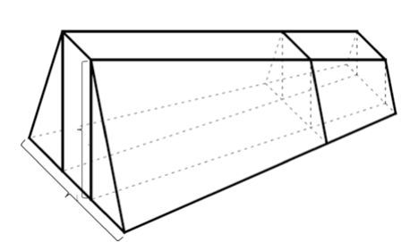
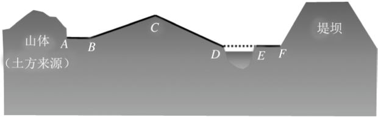

李渊打开书卷，漫不经心地翻了翻。第一题是推求月球赤纬度数，后面的题都是一些关于修造观象台、修筑堤坝、开挖沟渠、建造仓廪地窖等土木水利工程施工的计算问题，李渊看不懂。另有一张进表，名曰《上缉古算术表》。表上的话，翻译过来就是说：做皇上的，管理百姓万方，让他们信奉神明，给他们教育，选择有能力的人来管理具体事务，而在这类事情中想要人尽其能、物尽其用，最需要的就是计算。李渊看了，暗自点头。王孝通接着说，当年周公制礼，有九数之名，这九数就来自于《九章》。“其理幽而微，其形秘而约，重句聊用测海，寸木可以量天，非宇宙之至精，其孰能与于此者？”李渊忍不住微笑起来，心想，这呆子喜好算学，可以理解；算学也确实有用。不过把《九章》之九扯到周礼之数，未免牵强。接着，王孝通概述了算学的发展。《九章》以后，有刘徽的工作，“虽即未为司南，然亦一时独步”（也就是说，刘徽的工作虽然没有起到指导方向的作用，但在当时也是出类拔萃的了）。然而从那以后，数学的研究却渐渐式微。至于后来祖冲之父子所作的《缀术》，那是“全错不通”！
李渊忘记了烦恼，津津有味地读下去。这篇文章后面的意思，大致是说：微臣在平民百姓家长大，从小就学习算术。本来不聪明，但还算努力，一直钻研到头发都白了。研究是没有止境的，无奈没有人知道我的成就……看《九章·商功篇》讲述计算面积体积的方法，有些复杂的形状，可能上面宽，下面窄，前面高，后面低等，正文里面，都缺失了，不予讨论，这样使得现在有些不明白道理的人们不论平正还是歪斜，一概搬用。这不是拿方形的把手去插圆形的孔吗？微臣白天晚上都在想这件事情，望着自己写的书叹气，就怕哪天我死了，将来没人能看到他们的错误。于是我把不平不正的问题搜集了二十多个，取名叫《缉古算术》。请陛下遍访天下能算的人，让他们仔细考量，有无错误。如果哪位能改其中一个字，微臣将给他酬金千两。
李渊读到最后一句，忍不住大笑起来。旋即降旨，即刻刊印《缉古算术》，心里说，我看到底有没有人能给你找到错失。
武德八年（公元625年）5月，《缉古算术》在长安成书，瞬间成为经典，被用作国子监算学馆数学教材。这本书后来被称为《缉古算经》，被称为中国古代算学“十经”之一，流传千古。
今人有评论说，王孝通说刘徽“未为司南”，自己“曲尽无遗，终成寡和”，可谓狂妄自大；至于讲祖氏父子“全错不通”，不是无知不懂，就是颠倒黑白。也许王孝通的个性确实如此。可是从数学史和科学研究的角度来看，这些人的评论就显得不着边际。研究人员的主要任务是发现别人工作中的错误和弱点，加以改正、提高。即便真是狂妄自大又怎么样？应该把一个人品格和性格上的缺点跟他的研究结果分开来看。
实际上，王孝通的《上缉古算术表》的方式有点像今天人们向提供经费的部门提交科研计划时的做法：先论说自己领域的工作多么重要，再抓住别人工作的弱点和缺点加以攻击；最后许愿：本人有能力改进前人的缺点、弱点，本人的研究结果将对本学科产生重大影响，等等。
王孝通的工作确实对数学有很重要的影响，因为《缉古算经》记载了中国最早的一元三次方程的解。
“假令太史造仰观台，上广袤少，下广袤多。上下广差二丈，上下袤差四丈，上广袤差三丈，高多上广一十一丈。甲县差一千四百一十八人，乙县差三千二百二十二人，夏程人功常积七十五尺，限五日役台毕。……”这是一个多层次的问题，其中的一部分是求仰观台的长、宽和高。
仰观台是一个梯形界面的长方体天文观测台，也就是《九章算术》中所说的“刍童”，只不过是倒扣过来的。王孝通先求上宽，相当于以上宽为x，于是下宽为x+2，上长为x+3，下长为x+7，高为x+11。根据《九章算经》中的刍童体积公式，仰观台的体积应该是：
[（x+11）/6][(2x+6+x+7)x+(2x+14+x+3)(x+2)]=1740（立方丈）
化简以后，得到3x3+51x2+215x=5033。
《缉古算经》一共提到了二十八个三次方程，它们都具有下面的形式：
x3＋ax2＋bx＝c （11）
其中的系数a、b和c都是正数并且c不为零。通过几何方法，王孝通以文字描述的方式建立了这类方程。至于方程的解法，他只说“开立方除之”，没有细节。后世数学史家估计他是用《九章算术》的开立方术中求方根第二位及以后各位的方法来求三次方程的正根的。另外，为了简化开方程序，他把所有三次方程的最高项系数都化为1。经过后人验证，他的解答都是正确的。
这个问题值得花些时间仔细研究一下。先说堤坝的几何形状。这是一个截面为梯形的柱体，截面的面积随柱体的长度的变化而变化（下页图19）。让我们用A、B、H来表示西头（左侧）截面的上广、下广和高；用a、b、h表示东头（右侧截面的）上广、下广和高；以V、l、L表示堤坝的体积、正袤和斜袤。甲县6724人负责的堤段是图19中的右边部分，它的上广、下广、高、正袤、斜袤和体积我们分别用a′、b′、h′、l′、L′、V′来表示。左边的部分由乙、丙、丁三县的48 906名民工负责。所有的民工加起来，是55 630人。要求大坝工程一天完成（四县共造，一日役毕）。问题给出的条件是B-A=6丈8尺2寸、b-a=6尺2寸、H-h=3丈1寸、a-h=4尺9寸、l-h=476尺9寸。根据这些条件，对图19中复杂的形状做几何分割，再把分割后的碎片拼成若干个规则的几何形状，每一个的体积可以依靠公式计算出来，最后把它们求和，就得到总体积。这是一个需要有清晰的三维空间思维能力的做法，王孝通得到的堤坝体积公式为：
V=(1/6)[(2H+h)(A+B)/2+(2H+h)(a+b)/2]l（12）
有兴趣的读者不妨自己去试试看能否得到同样的公式。甲县负责的那一部分，其体积V′也可以通过类似的公式得到，只不过是把上式中的A、B、H、l换成a′、b′、h′、l′而已。如果我们知道每人每日平均筑坝的体积（立方几尺几寸），那么就知道了V和V′。于是整个坝体以及甲县负责部分的上广、下广、高、正袤、斜袤便可以求出来了。这里虽然没有明确的未知数的符号出现，但是在环环相套的运算过程中，计算者显然是随时要把未知数牢记于胸的。

图 19：《缉古算经》第三问中河堤的几何形状示意图。东头一小部分由甲县民工负责，西头的大部分由乙、丙、丁三县民工共同构建
但到此还没有完全解决问题。要想“一日役毕”，必须统筹安排55 630人的工作，挖土、运土、筑坝同时进行，早上开始，日落时全部结束。挖土的有挖土的进度，而且挖的土方和最后出土量不同（“穿方一尺得土八斗”）。运土的需要考虑路程的长短，而且路况非常复杂，有山路、平路、水路（“隔山渡水取土”）。这个复杂的系统工程，对王孝通来说并不陌生。实际上，从《九章算术》的年代起，中国古代数学家就必须面对这样的问题，而且发展出一套计算方法，叫作“齐同术”。齐其人、同其土，所有工作同期完成。
王孝通考虑的运土路况，大致由图20所示。

图 20：修筑堤坝系统工程土方运输道路示意图。根据沈康身论文《王孝通开河筑堤题分析》改画
土方的来源在图的左侧。挖出土来后，运土的人要走过平路十一步（AB），上坡路三十步（BC），下坡路三十步（CD），渡河十二步（DE），平地十四步（EF）。上下坡对速度有影响（“上山三当四，下山六当五”——上山速度是平地速度的3/4；下山速度是平地的1.2倍），水路速度最慢（“水行一当二”——水路是陆路速度的一半）。从A到E路况复杂，又要陆水改换，所以需要给人家喘息的时间（“平道踟蹰十加一”）。这些因素都要考虑进去，听上去复杂得似乎令人抓狂。
王孝通先计算从A到F运土折合成平地的步数是一百二十四步。根据题中给出的条件，每人每天挖土九百九十二升（“每人一日穿土九石九斗二升”），填土十一立方尺四又十分之六立方寸（“每人一日筑常积一十一尺四寸、十三分寸之六”），在平地上运土二十四点八升并走一百九十二步，而且每天运土六十二次（“每人负土二斗四升八合，平道行一百九十二步，一日六十二到”）。
从这里，可以得到每人每天挖土、运土和填土的能力。由此可以算出挖土、运土和填土人力的比值，以达到日落时全部完工的目的。王孝通得到的比例大约是12∶5∶13。我们不必深入钻研具体的计算，因为这毕竟只是一个计算的案例，里面还有一些因素我们不大清楚是如何处理的。比如运土人从F点回到A点的速度，还有立方尺与升斗担的具体关系。
《缉古算术》刊行的第二年，李世民发动玄武门之变，杀死了长兄皇太子李建成和四弟齐王李元吉，迫使李渊退位，封其为高祖，自己登基，为太宗。由于担心玄武门事件在史书中的评价，李世民强迫史官出示《起居注》和《实录》，并加以篡改，开创皇帝直接干涉史录之先。贞观二十三年，太宗驾崩，第九子晋王李治继位，为高宗。显庆元年（公元656年），国子监内添设算学馆，收取学生三十人专习数学，以十部算经及《三等数》等为主要教材。
算学馆这个机构早在隋代就有了。《隋书·百官制》记载说：“国子寺祭酒……统国子、太学、四门、书、算学，各置博士、助教、学生等员。”其中算学类设博士两人，助教两人，学生八十人。唐代的算学馆内按明算科学制分为两组，均限七年。每组专业学生十五人。第一组学《孙子算经》《五曹算经》《张丘建算经》《夏侯阳算经》各一年，《九章》《海岛算经》共三年，《周髀算经》《五经算术》共一年。第二组学《缀术》四年，《缉古算经》三年，总共七年。所有学生都必须兼学《数术记遗》和《三等数》。有意思的是，尽管王孝通说《缀术》“全错不通”，唐制规定学生还是要学，而且是跟王孝通的《缉古算术》一起学，可见朝廷把研究人员的这种意气之词全不当一回事。
七年是相当长的时间，比现在一般攻读博士还要久，因为就当时的数学水平和计算工具来说，很多问题的求解相当复杂困难。王孝通觉得，《九章算术》之类算书里面的问题过于简单，跟实际情况相差太大，所以他搜集到著作中的都是复杂问题。比如《缉古算术》中的第三题，假设从甲、乙、丙、丁四县征派民工修筑河堤，这段河堤的横截面是等腰梯形，已知两端上下底之差，两端高度差，一端上底与高度差，一端高度与堤长之差，且已知各县的出工人数、每人每日平均取土量、隔山渡水取土距离、负重运输效率和筑堤土方量，以及完工时间等，求每人每日可完成的土方量、整段河堤的土方量以及各县完成的堤段长度等。前两个问题是比较简单的算术问题，后两个问题则要经过较复杂的推导和几何变换归结为建立和求解形如方程式（11）的三次方程。这简直是一个系统工程了。
臣闻：九畴载叙，纪法著于彝伦；六艺成功，数术参于造化。夫为君上者，司牧黔首，布神道而设教，采能事而经纶，尽性穷源，莫重于算。昔周公制礼，有九数之名。窃寻九数，即《九章》是也。其理幽而微，其形秘而约，重句聊用测海，寸木可以量天，非宇宙之至精，其孰能与于此者？
王孝通：《上缉古算经表》
你来试试看？本章趣味数学题：
验证仰观台的体积
[(x+11)/6][（2x+6+x+7）x+（2x+14+x+3）（x+2）]=1740（立方丈）
可以化简为3x3+51x2+215x=5033。